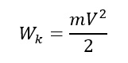

Теплопроводность представляет собой процесс передачи теплоты между структурными частицами вещества (молекулами, атомами, электронами) в результате их теплового движения.
Этот процесс направлен на выравнивание температуры между более нагретыми и менее нагретыми частями тела. При теплопроводности энергия переносится от частиц с более высокой энергией к частицам с более низкой энергией.
Такой механизм теплообмена может происходить в различных телах с неоднородным распределением температур, однако способ передачи тепла будет зависеть от агрегатного состояния вещества. Суть явления теплопроводности заключается в передаче кинетической энергии атомов и молекул от более нагретых участков тела к менее нагретым участкам при их взаимодействии.
Кинетическая энергия – это энергия движения. Она зависит от массы тела и его скорости. Формула для вычисления
кинетической энергии выглядит так:

где W_k - кинетическая энергия, m - масса тела, v - скорость тела. Кинетическая энергия преобразуется в другие виды энергии при взаимодействии тела с другими объектами.
Теплопроводность материалов определяется их способностью эффективно передавать тепло через свою структуру. В тканях, теплопроводность зависит от нескольких факторов:
1. Структура ткани: плотность волокон, способ их переплетения и наличие воздушных полостей могут существенно влиять на теплопроводность материала. Например, ткани с плотным переплетением волокон обычно имеют более высокую теплопроводность.
2. Состав материала: различные материалы имеют разные физические свойства, которые влияют на их способность проводить тепло. Например, натуральные волокна, такие как шерсть, могут быть хорошими изоляторами из-за их способности удерживать воздушные полости, в то время как синтетические материалы могут иметь более высокую теплопроводность из-за более компактной структуры.
3. Физические свойства материала: теплоемкость, плотность, тепловое расширение и другие физические характеристики материала также могут влиять на его теплопроводность.
4. Температура: теплопроводность материала может изменяться в зависимости от температуры. Некоторые материалы могут изменять свою теплопроводность при изменении температуры.
Натуральные волокна обладают различными свойствами теплопроводимости. Шерсть имеет высокую теплопроводимость из-за ее плотной структуры и способности удерживать воздух, что создает слой изоляции. Хлопок, в свою очередь, может иметь более низкую теплопроводимость из-за своей более открытой структуры.
Синтетические волокна имеют свои особенности теплопроводимости. Они часто обладают более высокой теплопроводимостью по сравнению с натуральными волокнами из-за их более плотной структуры и отсутствия воздушных карманов. Это делает их более подходящими для производства одежды для холодных условий.